هرچند شرکت JetBrains یک نسخه رایگان (community) از PyCharm رو منتشر کرده، که خیلی هم خوبه (خودم حدود 2 سال از این نسخه استفاده کردم و خیلی هم راضی بودم)، ولی از اونجا که ایرانی هستیم، با این چیزا راضی نمیشیم😅. نسخه Professional برنامه قابلیتهای اضافهای داره که برای یک برنامه نویس حرفهای خیلی به درد میخوره.
برای نصب PyCharm اول به صفحه دانلود PyCharm از سایت soft98.ir برید و از قسمت دانلود آخرین نسخه مربوط به ویندوز رو دانلود کنید
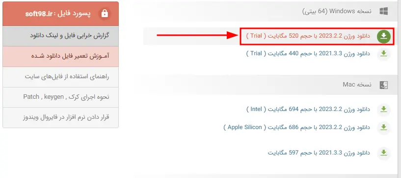همچنین فایل کرک برنامه رو هم از قسمت آموزش نصب و فعالسازی دانلود کنید، و روی لینک سریال برنامه هم کلیک کنید تا صفحه سریال فعالسازی باز بشه
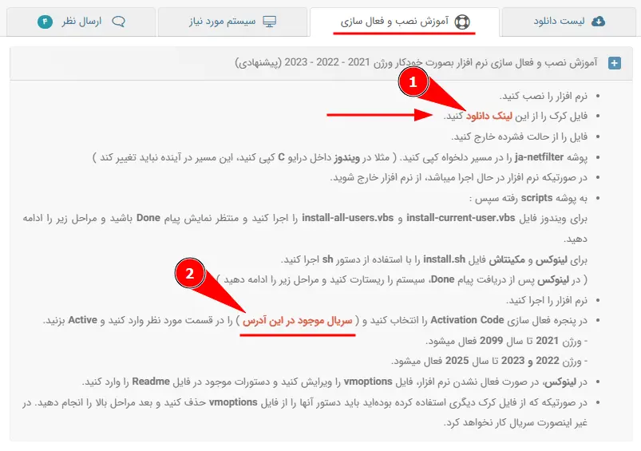حالا به پوشه دانلود برید و فایل exe نصب PyCharm رو اجرا کنید
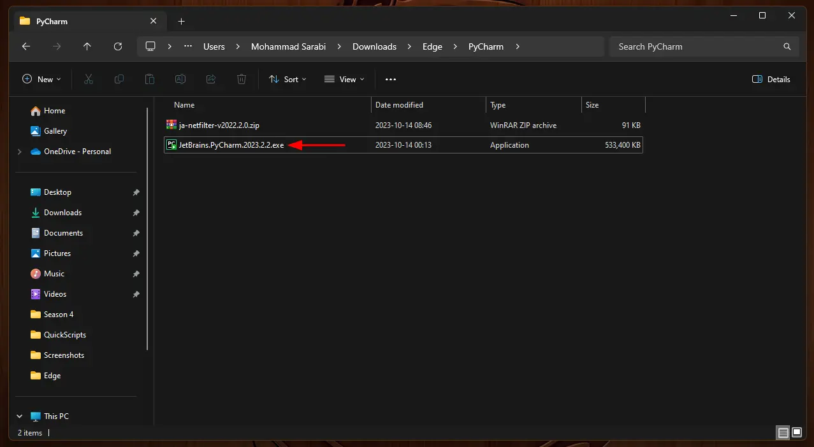بعد از اینکه فایل نصب باز شد، گزینه Next رو بزنید، تو قسمت بعدی اگر میخواید مسیر نصب رو تغییر بدید و دوباره Next رو بزنید.
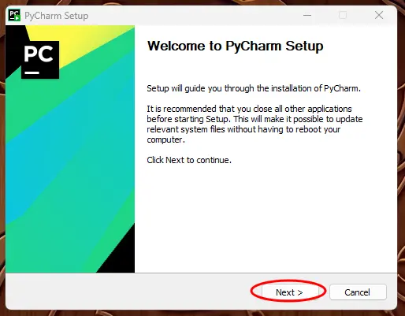 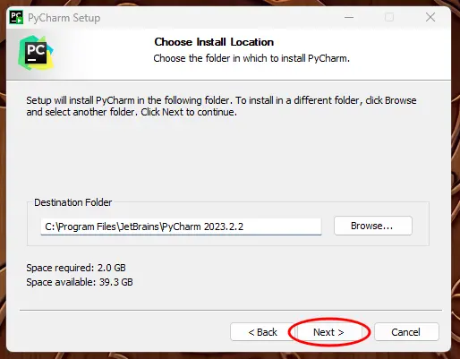تو این قسمت تیک Add "bin" folder to the PATH رو بزنید و Next رو بزنید.
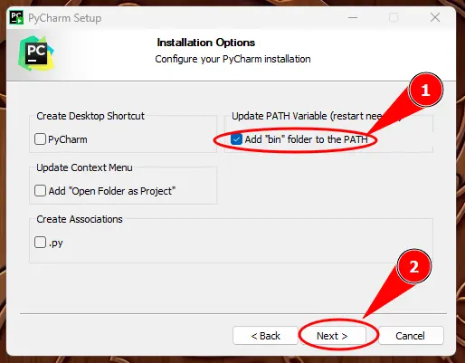و در نهایت گزینه Install رو بزنید و صبر کنید تا نرمافزار نصب بشه.
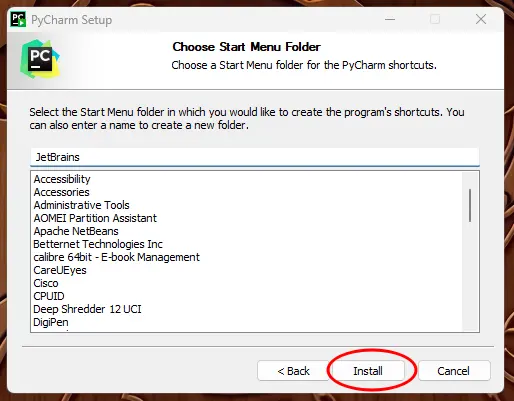بعد از اینکه نصب برنامه تموم شد گزینه "I want to manually reboot later" رو انتخاب کنید و Finish رو بزنید.
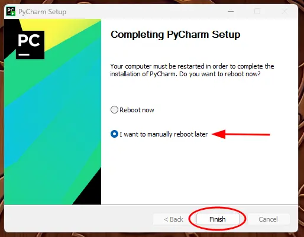حالا برگردید به پوشهای که کرک رو دانلود کردید، و از حالت فشرده خارجش کنید و تو یه پوشهای قرار بدید که مطمئن باشید بعدا تغییرش نمیدید. به عنوان مثال من تو فولدر فایلهای شخصی تو درایو C گذاشتم.
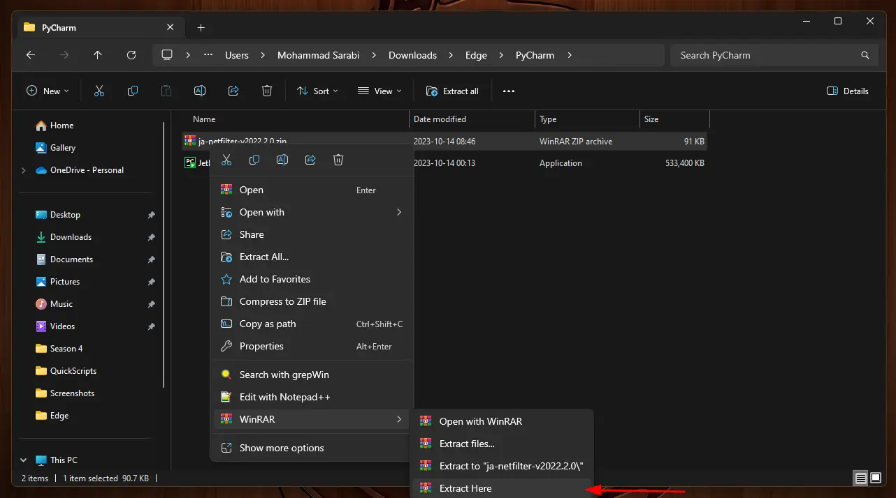 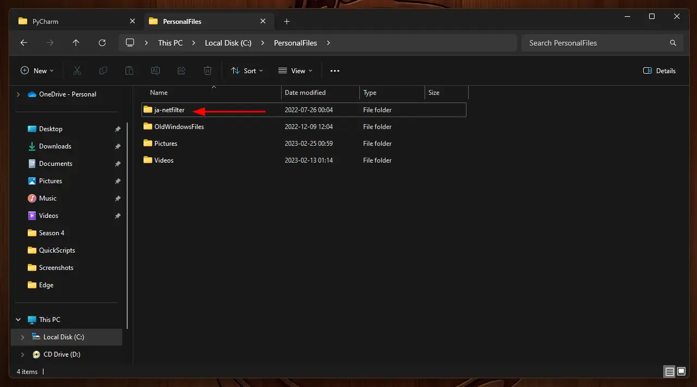حالا برید داخل پوشه scripts که تو پوشهی بالا هست و فایلهای install-all-users.vbs و install-current-user.vbs رو اجرا کنید،
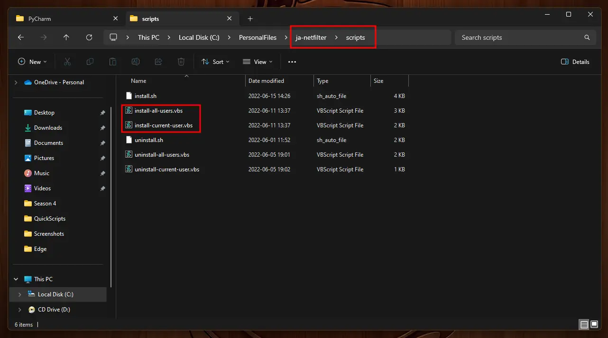برای هر کدوم از این فایلها OK رو بزنید، صبر کنید تا پنجره بعدی نشون داده بشه و دوباره OK رو بزنید
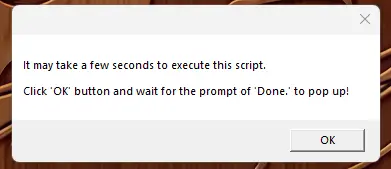 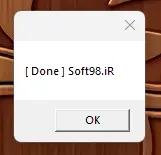یه پوشه واسه برنامههای مربوط به برنامهنویسی تو Start Menu درست کنید خیلی خوبه، آیکن Pycharm رو به این گروه اضافه کردم.
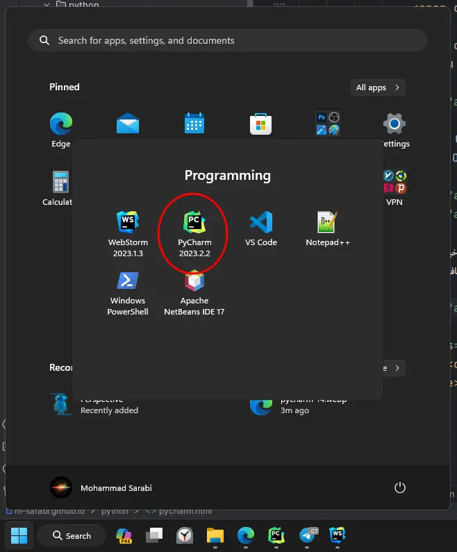حالا بهتره یه بار ویندوز رو ریستارت کنید. بعد برنامه رو باز کنید. اگر پنجره Import PyCharm Settings رو دیدید، تیک Do not import settings رو بزنید و OK رو بزنید.
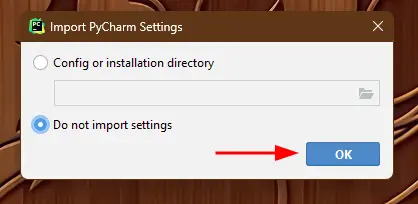حالا برگردید و صفحه سریال فعالسازی رو باز کنید و کد مربوط به PyCharm رو کپی کنید
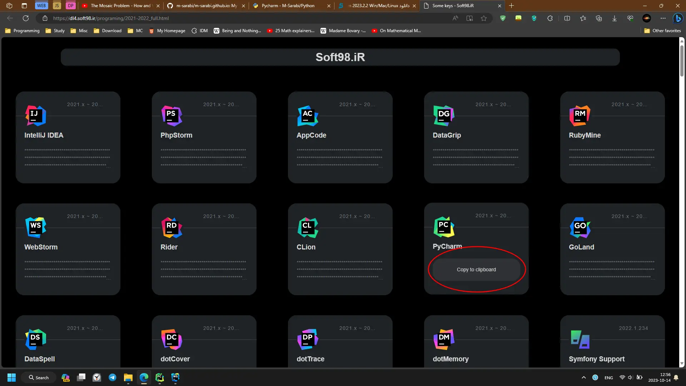تو پنجره بعدی PyCharm گزینه Activation code رو انتخاب کنید، کد رو تو قسمت خالی پیست کنید، و دکمه Activate رو بزنید
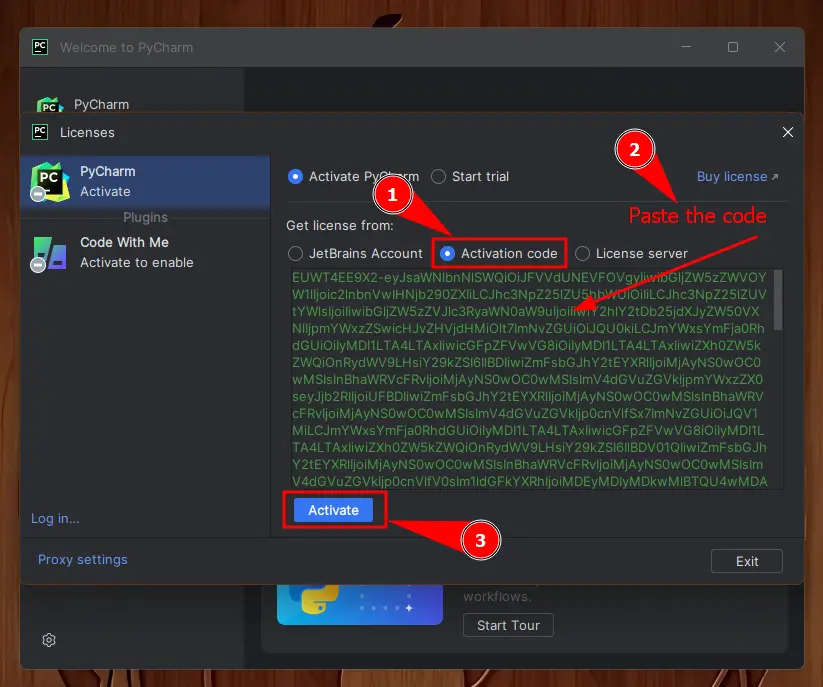توی پنجره بعد باید نشون بده که PyCharm تا چه تاریخی فعال شده. دکمه Continue رو بزنید و تمام.
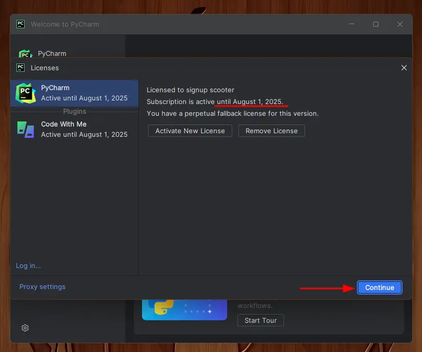